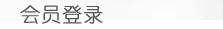

这四个星座天生乐观，心中总是充满希望!!!
射手座。 射手座的乐观精神属第一，几乎没有什么能够把他们打倒。他们的乐观，来自于注重精神层面。精神和信仰，与物质金钱，本来就没有关系的。只要活着，就有精神食粮。但也免不了错失良机，白白错过了很多机会。
双鱼座。 双鱼座的乐观，来自于他们看不清楚现实的残酷。把丑的想象成美好的东西。这样就会一直乐观着走下去。他们离不开爱情的谎言，用自己的泪水把这个残酷的世界与自己隔离，只要自己是乐观的，就会继续活下去。
巨蟹座。 巨蟹座的乐观来自于慈爱。巨蟹有一种天生的母爱，这种母爱，就是生命的希望。当他付出的时候，关爱别人的时候，就会心中充满希望，乐观的走下去。尽管有时候，会情绪变化，但乐观的底色，没有变过。
白羊座。 白羊座的乐观，来自于不去思考。如果不去思考，只凭着直觉来，那么危险和悲伤，就被压抑住，乐观的去战斗就好了。不长脑子，也有不长脑子的好处：做一个乐观的勇士。
想要了解更多请关注我们